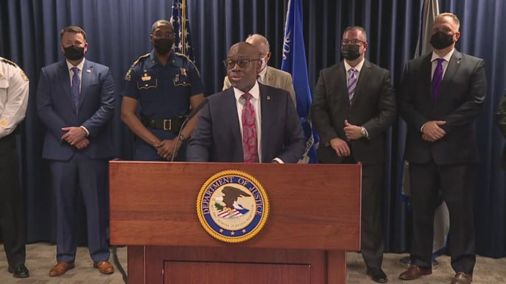
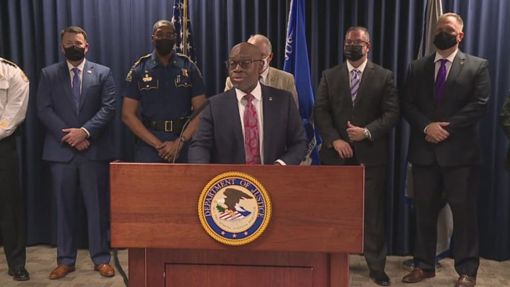

Fraudulent Credit Card Maker Sentenced to 108 Months in Prison
~2 min read | Published on 2022-07-06, tagged Credit-Cards, Fraud using 371 words.
A prolific fraudster who produced fraudulent credit cards using stolen card numbers from the darkweb was sentenced to 108 months in prison.
United States District Judge Eldon E. Fallon sentenced Maurice Durio, 42, to 108 months in prison. Durio had previously pleaded guilty to a credit card fraud charge.
According to U.S. Attorney Duane A. Evans, Durio operated “a card manufacturing plant” at an office space in an office park in Houston. Durio’s co-defendant, Edward Toliver, also rented office space in the same office park for the same purpose. The duo outfitted the office spaces with equipment used to manufacture fraudulent credit cards.

Durio and Toliver purchased stolen credit card numbers from sources on the darkweb, according to a press release from the U.S. Attorney’s Office for the Eastern District of Louisiana. Toliver also purchased cards from a source he had met in prison.
With the assistance of several co-conspirators, Durio and Toliver created templates for credit cards on their computers and
“downloaded credit card templates on laptop computers and transferred the stolen credit card numbers into the templates, which were then used to create tens of thousands of fraudulent access devices. The cards would generally be printed in batches with the same name appearing on numerous cards. The name was typically the real name of a co-conspirator. The cards were embossed with numbers, and corresponding account information was encoded on the strips on the back of the cards.”
Durio and Toliver distributed thousands of fraudulent credit cards to people who purchased valuable merchandise or gift cards.
Investigators learned about the operation after arresting people who had cards produced by Durio in their possession. Law enforcement officers from the Secret Service “were able to tie these card seizures to the plants” operated by Durio.
During the execution of a search warrant at the office park in Houston, feds seized access to device-making equipment, embossers, scanners, high-end printers, thousands of fraudulent credit cards, and a laptop computer. Durio had saved 80,000 stolen credit card numbers in files on the computer. On other computers used by Durio, feds found approximately 300,000 additional stolen card numbers.
New Orleans Man Sentenced to Nine Years in Federal Prison for Massive Credit Card Fraud Scheme | archive.is, archive.org, justice.gov
United States District Judge Eldon E. Fallon sentenced Maurice Durio, 42, to 108 months in prison. Durio had previously pleaded guilty to a credit card fraud charge.
According to U.S. Attorney Duane A. Evans, Durio operated “a card manufacturing plant” at an office space in an office park in Houston. Durio’s co-defendant, Edward Toliver, also rented office space in the same office park for the same purpose. The duo outfitted the office spaces with equipment used to manufacture fraudulent credit cards.

U.S. Attorney Duane A. Evans announced the sentence.
Durio and Toliver purchased stolen credit card numbers from sources on the darkweb, according to a press release from the U.S. Attorney’s Office for the Eastern District of Louisiana. Toliver also purchased cards from a source he had met in prison.
With the assistance of several co-conspirators, Durio and Toliver created templates for credit cards on their computers and
“downloaded credit card templates on laptop computers and transferred the stolen credit card numbers into the templates, which were then used to create tens of thousands of fraudulent access devices. The cards would generally be printed in batches with the same name appearing on numerous cards. The name was typically the real name of a co-conspirator. The cards were embossed with numbers, and corresponding account information was encoded on the strips on the back of the cards.”
Durio and Toliver distributed thousands of fraudulent credit cards to people who purchased valuable merchandise or gift cards.
Investigators learned about the operation after arresting people who had cards produced by Durio in their possession. Law enforcement officers from the Secret Service “were able to tie these card seizures to the plants” operated by Durio.
During the execution of a search warrant at the office park in Houston, feds seized access to device-making equipment, embossers, scanners, high-end printers, thousands of fraudulent credit cards, and a laptop computer. Durio had saved 80,000 stolen credit card numbers in files on the computer. On other computers used by Durio, feds found approximately 300,000 additional stolen card numbers.
New Orleans Man Sentenced to Nine Years in Federal Prison for Massive Credit Card Fraud Scheme | archive.is, archive.org, justice.gov